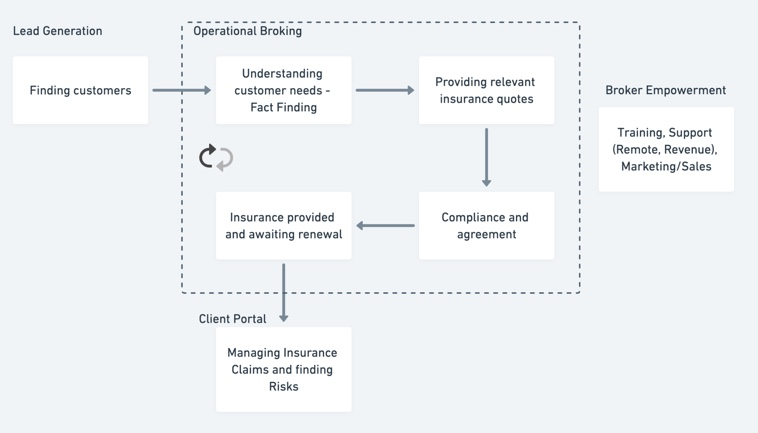
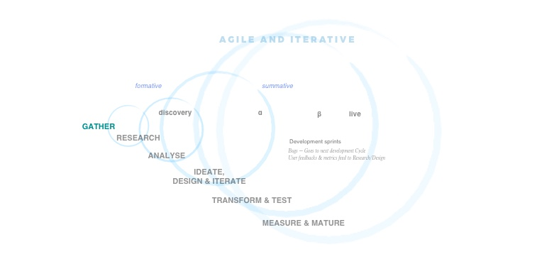
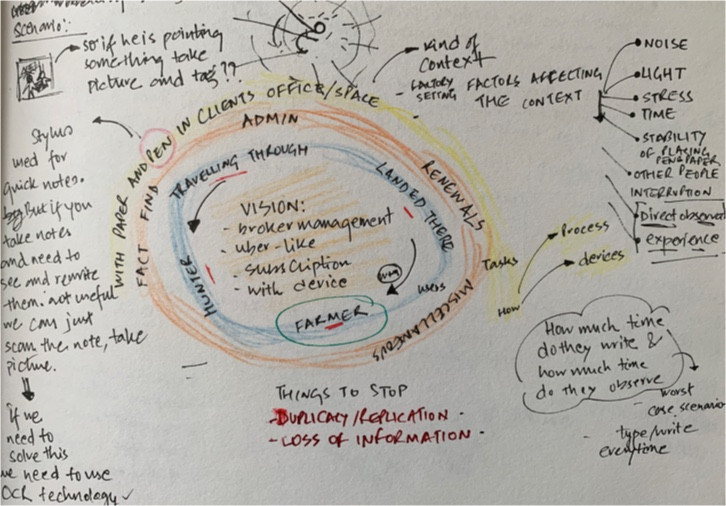
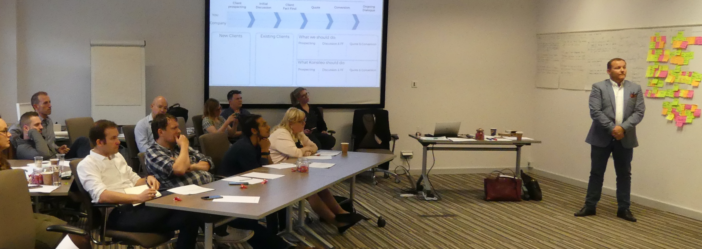
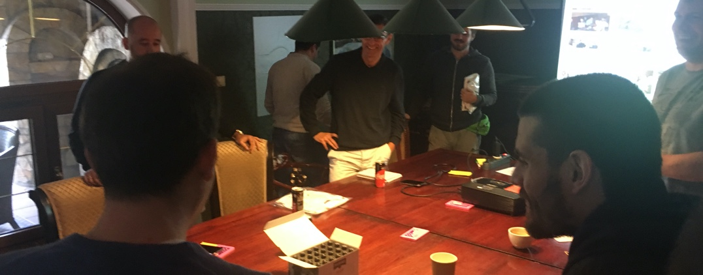
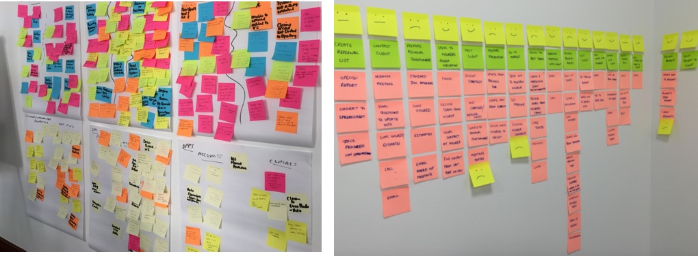
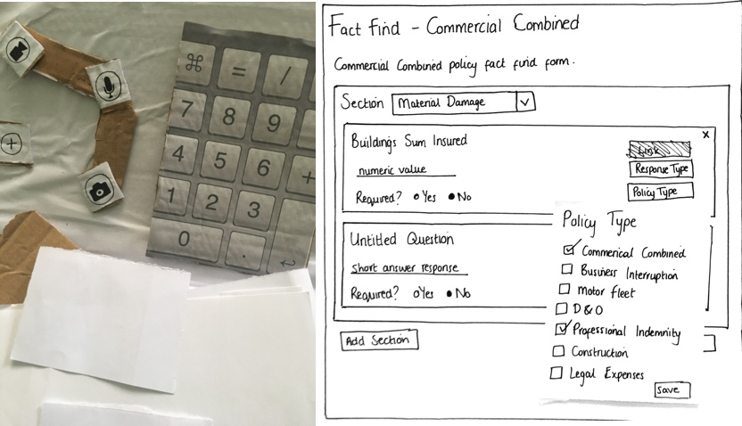
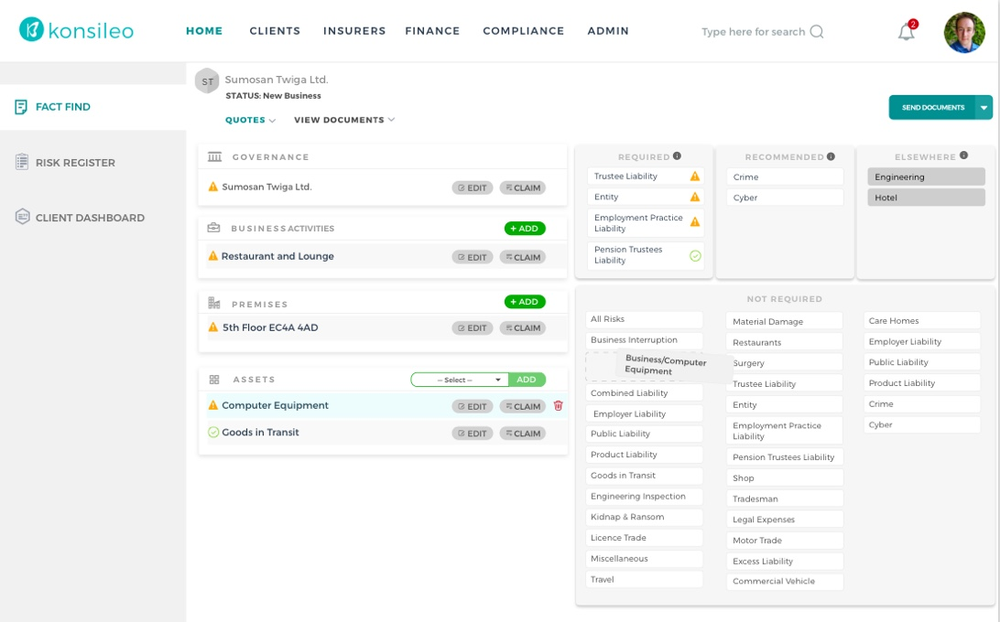

CHALLENGE
In this case study, I will describe my design process building a Fact Find that became the foundation of other value-added services that Konsileo would provide to disrupt the insurance broking Industry.
Fact find is the most repetitive and time consuming operational tasks, that every broker would do as the first step in knowing about a business client.
It is a form filling session where an insurance broker would visit clients premises to understand about the business and gather the essential information in multiple complex paper forms (55+ pages).
The goal was to create a seamless experience of the fact-finding process that would reduce redundancy and the loss of information.

OUTCOME
Since, its launch a year ago, Konsileo’s system has been used to place around £5 million in premiums with only 8 brokers using it and more broker are opting to join the system every day.
i.e. 55% more than the average (£600k+ premium per broker)

My design process
REQUIREMENT GATHERING
Coming from a non-insurance background, I quickly acquainting myself with the insurance industry. I had initial requirement gathering sessions with the CEO, business analyst and product manager where I got to know the vision behind the business, challenges we are trying to solve, team aspirations and setting initial roadmap.

DESIGN RESEARCH
I used focus group with the brokers to open up a healthy conversation regarding big and small operational issues faced during their daily work. I asked them to start sticking the issues up on a whiteboard and discussed each one in turn.
Once they had a good talk about their frustrations, I presented the tagline “If you had a magic wand ..." and asked them what insurance broking would look like in the ideal world. We labelled these ideas “Opportunities” in the affinity map.

Then I wanted to get to the heart of some of the issues raised so to better understand the end-to-end process and find out inefficiencies I asked the brokers to help me with a task analysis. Again, this was insightful and it was interesting to see how differently all of them completed the same processes, using different ‘workarounds’ to overcome inefficient and inadequate IT systems.

ANALYSE
Throughout the focus group and tasks analysis processes, I encouraged my whole team to participate to develop empathy towards the users and understand the operational tasks. (show picture).The Affinity map aided us to showcase trends, themes, concerns and areas of opportunity for discovery and improvement.

Pain points to address: (from the broker’s point of view)
“When I visit a client for Fact finding I need to carry around 20 different paper forms because each type of insurance (e.g. professional indemnity, cyber liability) is captured on a separate form.”
“The forms are very rigid and sometimes I need to capture information that is not asked for (or there is no space for) on the form.”
“I have to re-key the same information into several different IT systems”
EMPATHY
Triangulating between research on existing tools, interviews, observations and user data provided greater validation and insights. Given the time period, I was quite satisfied with my research findings to move forward in the next phase.
Using the information from the task analysis I created four personas and sketched storyboards of their typical work-day and mapped out their user journeys. This was presented back to my team visually to enable them to clearly identify and agree on pain-points and areas for significant improvement.

IDEATE & PROTOTYPING
It was important that the brokers feel part of the solution, so I invited them for a design studio workshops. The goal of the workshop was to explore a wide set of ideas and also create a shared vision to move forward within a short amount of time.

During the sessions, individually and then collaboratively the team ideated and started sketching their ideas.
To make the session interactive and soak them fully into the design, I introduced them to Wizard of Oz and Role-playing. I choose Wizard of Oz methodology as this would give the participant full-freedom of interacting with different kind of props and the observers a good understanding of what would be the best option for the devices we could choose. Each one of them would role-play their sketched ideas to replicate a real scenario.

Cut-outs
For roleplaying I choose various different context such as home, cafe, office, walking in the factory etc. Many different kinds of props (such as a tablet, keyboard, buttons etc.) were cut out of cardboard and participants were free to use anything to complete the tasks while playing the actor.
DESIGN & ITERATE
The session was recorded and then we sat down to discuss and compare how those significant pain points were handled by the brokers using props and which screen size they were more comfortable with.
By the end of the session, we all agreed to go with a modular desktop interface as majority of them prefered a relatively medium-sized screen (bigger in size than a tablet) with keyboard, touchscreen and camera facilities which would be portable as well as would be easy to connect to their large sized monitors once they were in office. Additionally, we had produced a couple of sketches and a high-level user flow which everyone supported. The sketch also included ideas to connect various data feeds, such as Google maps, Companies house company data.

Multiple iterations
Data feed:
Further, I also took the role of business analyst collaborating with the CEO and the brokers to list the different data feeds that would make their life easy. I listed them in Excel and researched and found 39 different data sources to provide a complete overview of a company, such as Companies house API, ICO registers, Google maps, flood registry, crime data etc.

Understanding various data feed for integration

Showing part of a Konsileo process flow map (v0.2)
Process map:
Meanwhile I also mapped out a flow diagram to communicate my ideas to the engineering team. Bringing them into the process at the beginning of the design phases proved valuable as we were able to collaborate and further simplify the flow.
TRANSFORM & TEST
Working with the management, development team and product manager, we defined a product roadmap to determine the release sprints. I then created a backlog of items in Jira formed our first sprint. I worked on the user journeys and screen designs based on the order of priority according to the roadmap. I used Sketch Design software to create hi-fi mock-ups and detailed the specifications in the Jira tickets and conducted walk-throughs with the development team out in Serbia.

Fact Find